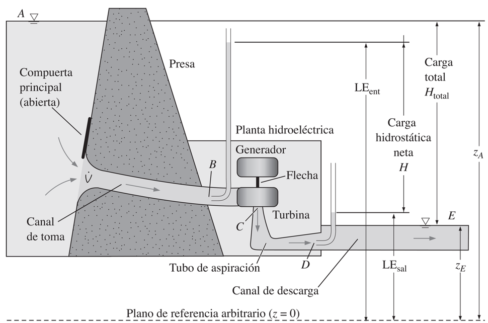
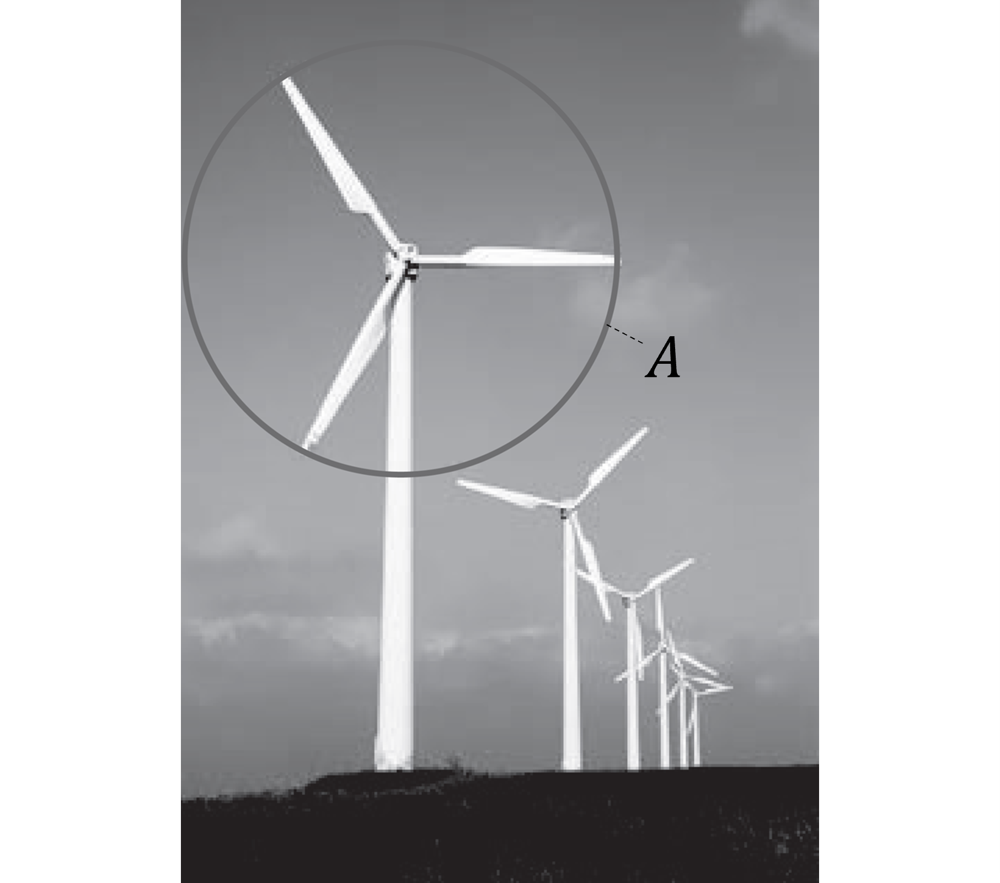

Turbinas
Contents
5.3. Turbinas#
5.3.1. Tipos de turbinas#
5.3.1.1. Turbinas de desplazamiento positivo#
Se utilizan como dispositivos para medir flujo. El ejemplo más conocido es el medidor de agua doméstico, el cual utiliza un disco nutante

5.3.1.2. Turbinas dinámicas#
Se utilizan como dispositivos para medir flujo y también como generadores de potencia.
Respecto a las turbinas dinámicas para producir potencia, tenemos:
Turbinas de impulso o acción: Generan energía a partir del cambio de momentum lineal del fluido
Turbinas de reacción: Generan energía a partir de cambios de presión y velocidad
{kind=link}
Una turbina de reacción, la dirección del flujo no cambia tan significativamente como en una turbina de impulso
La diferencia principal entre ambas turbinas está en la demanda de carga hidrostática y caudal. En este aspecto, las turbinas de impulso demandan cargas hidrostáticas mayores que las de reacción, aunque requieren caudales menores.
5.3.2. Eficiencia en turbinas#
La eficiencia de una turbina está definida por:
donde \(\dot{W}_\mathrm{bhp}\) es la potencia entregada por el rodete, y \(\dot{W}_\mathrm{util} = \rho g HQ\) es la potencia util disponible por el sistema.
{kind=link}
5.3.3. Hidroturbinas#
Definimos como hidroturbina a una turbina que opera con líquidos como fluidos de trabajo.
A continuación mencionamos las turbinas más comúnes.
5.3.3.1. Turbina Pelton (impulso)#
{kind=link}
En una turbina Pelton, el chorro a alta velocidad transfiere la energía a los álabes o cangilones. Los cangilones están diseñados para dividir el flujo y cambiar la dirección del flujo lo más cercano a 180°

Mediante un análisis teorico simple podemos deducir la siguiente fórmula para la potencia del rotor en turbinas Pelton:
donde \(V_j\) es la velocidad del flujo incidente en el rotor, \(\beta\) es el ángulo del borde divisor, \(\omega\) es la velocidad de rotación y \(Q\) es el caudal.
En la práctica, el ángulo divisor \(\beta \approx 160° - 165°\) para maximizar la potencia.
Respecto a la velocidad de rotación \(\omega\), se puede demostrar que la máxima potencia se alcanza cuando
5.3.3.2. Turbina Francis (reacción)#
Es una turbina de reacción de flujo interno. Su configuración geométrica es similar a una bomba centrífuga, pero con el flujo en dirección contraria.

5.3.3.3. Turbina Kaplan (reacción)#
Es una turbina de reacción de tipo hélice. Su configuración geométrica es similar a un ventilador de flujo axial, pero en sentido opuesto.

5.3.3.4. Análisis comparativo#
La selección del tipo de turbina depende de la altura hidrostática y caudal disponible, en este sentido:
Turbina Pelton: Altura hidrostática alta, caudal bajo
Turbina Francis: Altura hidrostática media, caudal medio
Turbina Kaplan: Altura hidrostática baja, caudal alto
5.3.4. Turbinas para gases#
En el caso de gases, las turbinas más comunes son de reacción.
5.3.4.1. Turbinas de vapor y gases de combustión#
Se utilizan para la generación de energía en centrales térmicas basadas en combustión de gases, concentración solar o energía nuclear.
La mayoría de las turbinas en esta categoría operan en etapas múltiples de flujo axial.
5.3.4.2. Turbinas eólicas#
Se utilizan para la generación de energía a partir de las corrientes de viento
Existen diversos tipos. Sin embargo, la clasificación más general es respecto a la dirección de su eje de rotación. A partir de esto tenemos:
Turbinas de viento de eje horizontal (HAWT, por sus siglas en ingles)
Turbinas de viento de eje vertical (VAWT, por sus siglas en ingles)
{kind=link}
5.3.4.3. Análsis teórico de eficiencia#
Es posible realizar un análisis teórico simplificado para determinar la potencia entregada y la eficienca de una turbina eólica.
El volúmen de control es el que se indica en la figura. El cambio de sección es el resultado de la reducción en la velocidad del viento producida por la transferencia de energía hacia la turbina.

A partir de este esquema podemos determinar una expresión para la potencia de eje que entrega la turbina:
donde \(A\) es el área de disco, definida como el área normal a la dirección del viento barrida por los álabes
{kind=link}
Definimos como coeficiente de potencia (\(C_p\)), a la fracción de la potencia disponible del viento (\(\frac{1}{2}\rho V^3 A\)) extraida por la turbina:
El coeficiente de potencia es un parámetro característico de cada turbina.

El límite de Betz define el límite superior para la eficiencia de una turbina.
5.3.5. Referencias#
Çengel Y. A. y Cimbala M. J. Mecánica de Fluidos: Fundamentos y Aplicaciones, 4ta Ed., McGraw Hill, 2018
Capitulo 14: Turbomáquinas
White F. M. Mecánica de Fluidos, 5ta Ed., McGraw Hill, 2004
Capítulo 11: Turbomáquinas